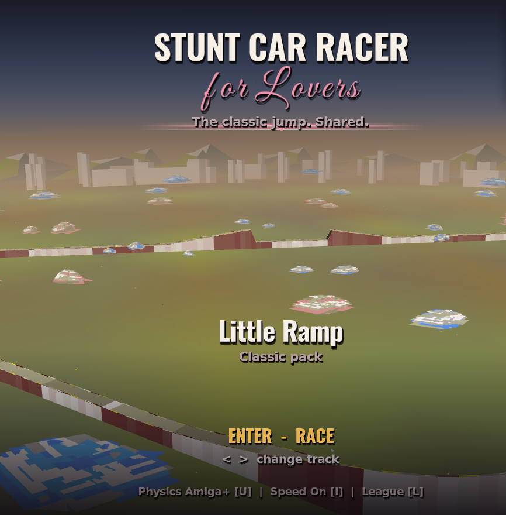

A free remake of Geoff Crammond’s Amiga classic — Amiga+ physics, Speed Feel, and Enhanced Look that stays in the SCR palette.
U Amiga+
I Speed
O Look
P Pause
Mac download
Apple Silicon DMG. First launch: run Fix macOS Gatekeeper.command in the disk image, or use System Settings → Privacy & Security → Open Anyway.
Download DMGFAQ
Play free in the browser?
Yes — open the WebAssembly build. Keyboard or gamepad works best.
Mac says the app was not opened?
Expected for this unsigned build. Use Fix macOS Gatekeeper.command, or Privacy & Security → Open Anyway. Terminal: xattr -cr "/Applications/Stunt Car Racer for Lovers.app"
Is this the original Amiga game?
No — a remake based on StuntCarRemake.